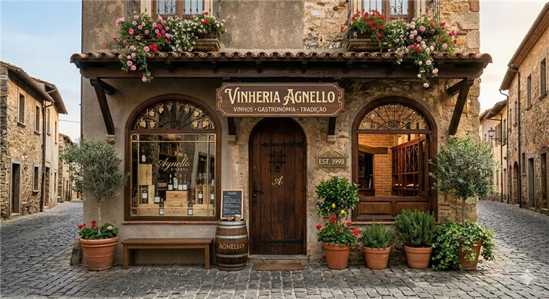
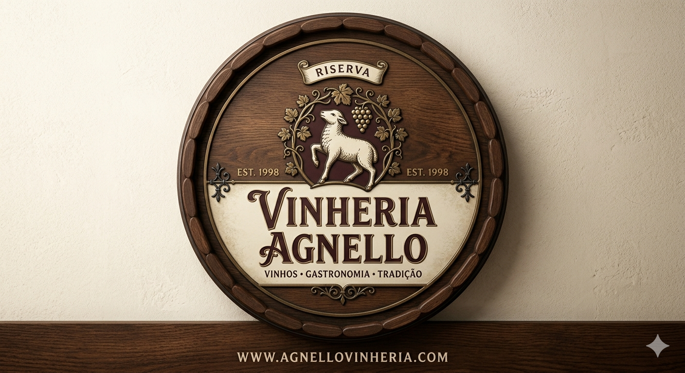

Nossa História
Tradição e inovação no mundo dos vinhos
A Vinheria Agnello nasceu em São Paulo há mais de 15 anos, fundada pelo senhor Giulio com o propósito de oferecer mais do que vinhos: proporcionar experiências. Desde o início, a empresa se destacou por seu atendimento próximo e altamente especializado, ajudando clientes a descobrirem novos sabores e a fazerem escolhas mais assertivas.
Com apenas uma loja física, a vinheria construiu sua reputação com base no conhecimento profundo de seus vendedores, que atuam quase como consultores, orientando sobre uvas, regiões, vinícolas e harmonizações. Esse cuidado transformou a relação com os clientes em algo único, criando confiança e fidelidade ao longo dos anos.
Mesmo com o crescimento do mercado digital, a Vinheria Agnello sempre manteve uma gestão tradicional, priorizando o contato humano e a experiência presencial. No entanto, com os impactos da pandemia e as mudanças no comportamento dos consumidores, surgiu a necessidade de se reinventar.
Foi então que Bianca, filha de Giulio, incentivou a modernização do negócio. Juntos, decidiram dar um novo passo: levar a essência da vinheria para o ambiente digital, criando um e-commerce que mantenha o mesmo cuidado, orientação e proximidade que sempre definiram a marca.
Hoje, a Vinheria Agnello inicia um novo capítulo de sua história, unindo tradição e inovação para continuar guiando seus clientes pelo vasto e fascinante mundo dos vinhos.
Nossa Tradição


Marcos Importantes
- Fundação da vinheria em São Paulo
- Conquista de clientes fiéis ao longo dos anos
- Reconhecimento pelo atendimento especializado
- Início da transformação digital com e-commerce